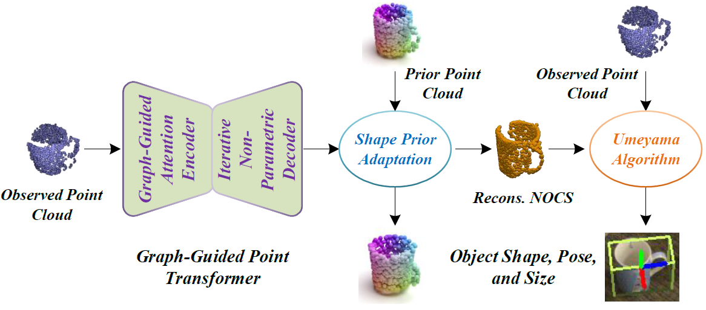
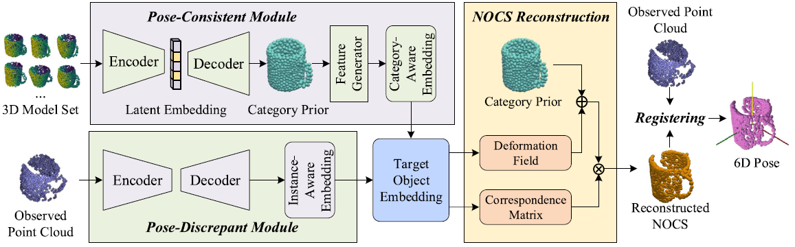
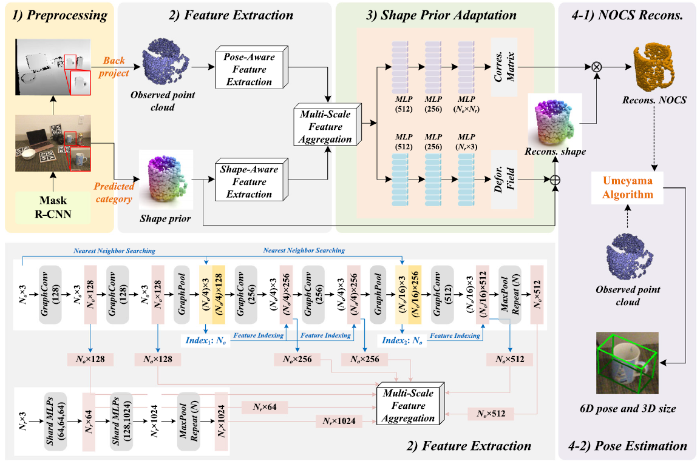

Lu Zou (邹露)
 |
Ph.D., Lecturer, |
About me
I received my Ph.D. degree in Computer Science and Technology from University of Science and Technology of China (USTC) in December 2023, supervised by Prof. Zhangjin Huang and Prof. Naijie Gu.
Before that, I received the B.Sc. degree at the College of Information Engineering from Sichuan Agricultural University in 2018.
Research Interests: Object Pose Estimation, Human Activity Analysis, 3D Object Detection, Point Cloud Processing, etc.
Publications
 |
|
|  |
|
|  |
|
|  |
|
 |
|
 |
|
 |
|
Projects
Virtual Human Based on Intelligent Voice and Mirror Interactive Hardware Platform (PI)
the Fundamental Research Funds for the Central Universities
No. WK6030000109, 2019/01 - 2020/12
Research on Vehicle and Pedestrian Detection in Intelligent Surveillance Video (PI)
Scientific Research Interest Training Plan for College Students of Sichuan Agricultural University
No. 04054594, 2016/09 – 2017/12
Awards
Third Prize, the 16th "Challenge Cup" Competition (PI), China, 2019
Huawei Scholarship, Special Scholarship of University of Science and Technology of China, 2019
Gold Prize, the 8th "Challenge Cup" Competition (PI), Anhui Province, 2019
Excellent Thesis, Sichuan Agricultural University, 2018
Top Ten Entrepreneurship and Innovation Talents, Sichuan Agricultural University, 2018
Second Prize, Special Scholarship of Sichuan Agricultural University, 2017
First Prize, Internet of Things Innovation and Application Competition (PI), Sichuan Agricultural University, 2017
Excellent Volunteer, Sichuan Agricultural University, 2016
Third Prize, National English Competition for College Students (NECCS), 2016